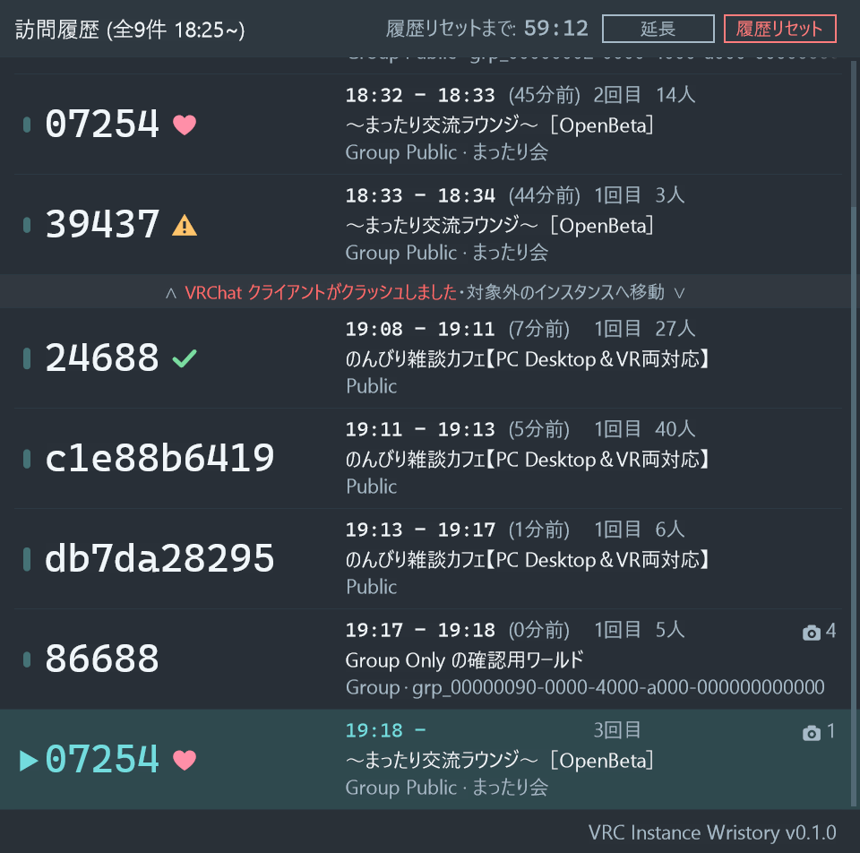
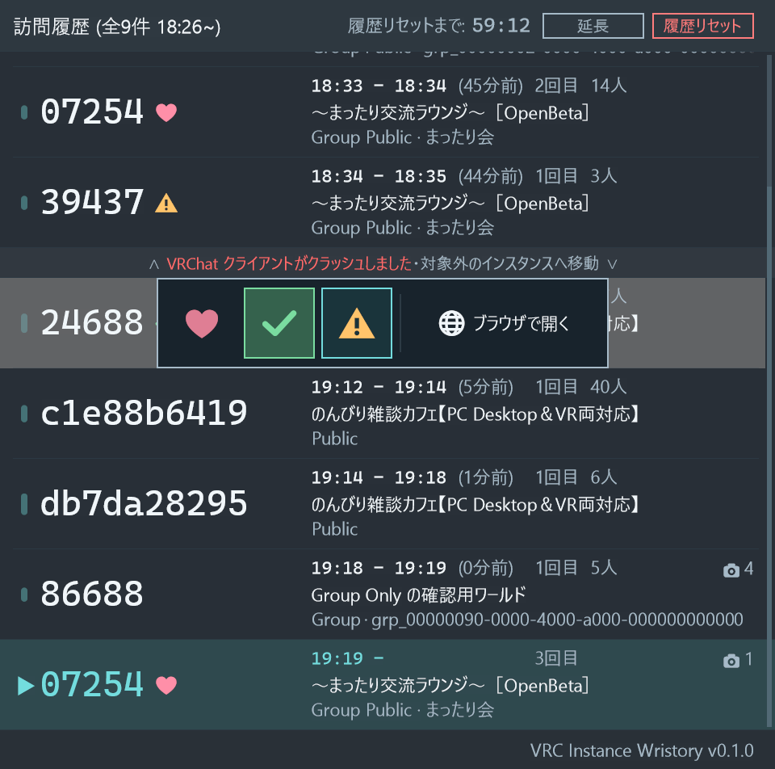
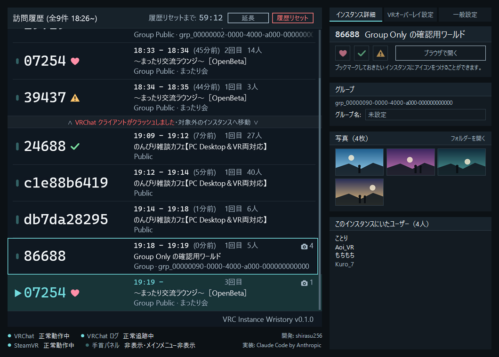

手首のパネル — 現在のUI
VRC Instance Wristory v0.1 / 反映した実装: 2026-09-27 時点のソース（5.52まで）
このページは初期案（改訂0.3）を、実機確認後の変更（実装メモ 5.5〜5.13）まで反映して作り直したもの。
寸法・配色・文字サイズ・文言は Vr/PanelStyle.cs と Vr/PanelRenderer.cs から取った。
現在の動作の正本は実装メモ（非公開）の 5.13 節で、仕様書（改訂0.4）と食い違う場合はそちらが優先する。
ブラウザの文字描画はGDI+と同一ではないため、ここでの1px単位の見え方は近似。
実際の描画そのものは下の「実機と同じ描画結果」の画像（
--render-sample の出力）で確認できる。
パネル
倍率
背景
訪問履歴 (全9件 21:12~)
履歴リセットまで:59:12
すべての訪問履歴を今すぐリセットします。
よろしいですか？
よろしいですか？
マウスをパネルに乗せると命中点のカーソルが出る（右手のレイに相当。ビームの線は描かない。輪の大きさは実寸どおり）。 行に乗せると、その行がわずかに白くなる（実機では右手で指したとき）。24688 の行には、トリガーを引いたときに出る目印の選択肢と「ブラウザで開く」を開いたまま描いてある。 ホイールで一覧をスクロールできる。初期表示は末尾で、8行目が半分見えることと、右端のつまみの位置で「まだ下に続く」ことを示す。
この画面の作り
| テクスチャ | パネルは最大 960×952px（見出し64 + 表示領域840 + 下部案内48）の1枚。行が7.5行に満たないときはその行のぶんまで縮む（3行なら960×448px）。行の文字は下絵（960×1045px＝9行×112px ＋ 帯37px）へ描いておき、そこから見えている窓を写して組み立てる（5.35） |
|---|---|
| オーバーレイ | パネル sort 10（左コントローラー基準）とカーソル sort 16（絶対座標）の2枚だけ。見出し・行・つまみ・指している行の帯・目印のポップアップは、すべてパネルの絵の中に描く。2026-09-22までは14枚に分けていたが、それは SetOverlayRaw のちらつきを避けるための作りだった（5.35） |
| 絵の渡し方 | SetOverlayTexture。こちらがD3D11で持つテクスチャを結び付けて中身だけを書き換えるので、渡し直してもちらつかない（5.34） |
| 表示行数 | 最大7.5行。8行目を半分見せて続きがあることを示す。7行以下では縦幅を詰め、下端を固定して上へ伸びる |
| 物理幅 | 14cm（overlayWidthMeters 0.14）。1px ≒ 0.146mm |
| 列 | 印・滞在時間の棒 16〜50px ／ ID 50〜370px（目印30pxはこの中。IDの末尾から12px空ける） ／ 付加情報 386〜934px ／ スクロールの溝 950〜956px |
| 1段目 | 時刻（等幅22px）→ 14px → 退出からの分数 → 14px → 回数 → 14px → 人数。分数と回数の欄は一覧でいちばん長い値の幅に揃える（分数は2桁ぶんが下限）ので、どの行でも回数と人数の左端がそろう（5.36）。滞在中に写真を撮った行は、右端に写真の印（22px）と枚数を出す（5.47） |
| 文字 | ID 44px Cascadia Mono（収まらなければ0.72倍→折り返し、省略はしない）／付加情報 22px Yu Gothic UI／見出し 24px／印 26px |
| 背景 | 不透明度90%を背景画素にだけ適用し、文字は不透明のまま重ねる |
| 行の区切り線 | 1px。ふだんは左右の余白ぶんだけ短い（16〜940px）。帯（対象外への移動・クラッシュ）の上下と、現在地の行の上だけは0〜960pxの全幅にして、前の行から切り離して見せる（5.29・5.30） |
| 右端のフェード | 2段目のワールド名と3段目のGroup IDは省略せず、右端56pxで不透明→透明へ。実装は横方向のグラデーションブラシ、このページはCSSのマスクで、どちらも画素単位に変化する |
| スクロール | 見た目が変わったフレームだけ組み立て直して渡す（スクロール中は毎フレーム）。行の文字は描き直さず、下絵から見えている窓を写すだけ（5.35） |
| 時間とともに変わるもの | 残り時間（毎秒）と、退出からの分数・滞在中の行の棒（毎分）。分数は時:分どうしの差なので、どの行も毎分0秒にそろって1つ進み、行の下絵を描き直すのは1分に1回で済む（5.36） |
実機と同じ描画結果
VRCInstanceWristory --render-sample <png> の出力そのもの（9行なので上限の960×952px。実機と同じ経路で、行の下絵から1枚に組み立てたもの）。
上のHTMLと違い、これは製品と同じGDI+の描画結果。


--render-sample --mark-popup）。指している行がわずかに白くなり、いま付いている印（チェック）は枠付き、指している印（注意）はアクセント色の枠。右端は行のボタン（既定の「ブラウザで開く」。設定で「ここへ戻る」→5.43・5.53）。
--render-sample --window）。左は手首と同じパネルで、クリックした行（枠付き）の詳しい情報（目印と、その右の行のボタン（手首のポップアップと同じ順→5.101）・グループ名・写真のサムネイル・このインスタンスにいたユーザー）を右の「インスタンス詳細」に出す（5.42・5.55）。表示・操作の条件
| 記録する対象 | 既定は Public / Group Public / Group+ / Group の4種類（仕様の3種類に 5.86 で Group+ を足した）。デスクトップのウィンドウで8種類から選べる（5.39） |
|---|---|
| 付ける手首 | 既定は左手首（右手で操作）。設定で右手首にすると、パネルは右コントローラーに付き、レイ・スティック・グリップ・トリガーは左手になる。右手首の配置は、置き直すまでは左手首の配置を左右反転したもの（5.49） |
| 表示する範囲 | 対象インスタンスに滞在している間は無期限。離れてから60分でまとめて消える。古い順、最大で7行＋8行目の半分 |
| 1行の中身 | 左に大きなID、右に3段（時刻（入室 - 退出）＋退出からの分数＋回数＋退出時の人数／ワールド名／種類＋Group ID）。1段目は 00:35 - 00:36 (9分前) 1回目 24人。分数は退出時刻と現在の時:分どうしの差で、60分を超えても分で出す。滞在中の行は退出側を空け、分数と人数も空欄にする（5.36） |
| 滞在時間の棒 | 印（▶）と同じ列に出す縦棒。中心は ▶ の見た目の中心（列の中央より3px左）に合わせる。太さ8px・端は半円・不透明度0.165。現在地の行には出さず、▶ だけを出す。行の中央から上下へ伸び、上下に16pxの余白を残す。滞在0分は直径8pxの丸で、60分（履歴を消す判断と同じ長さ）で最大の80px。その間は滞在時間÷60分の平方根で伸ばす（1分17px・5分29px・30分59px。比例だと1分9px・5分14pxで見分けが付かなかった→5.36）。滞在中の行は入室から現在までで伸びる |
| 対象外への移動の帯 | 対象3種別以外のインスタンスへ一瞬でも移ってから対象へ戻った区間は（滞在の長さは問わない）、前後の行の間に ∧ 対象外のインスタンスへ移動 ∨ の帯を入れる。縦幅は行の1/3（37px）、背景は行よりわずかに明るい #1d252c、文字は20pxで左右中央。上下は端まで伸ばした線で挟む。対象外へ移ったまま終了し、次の起動で直接対象へ入った区間にも出す。先頭の行には出さない（5.38） |
| クラッシュ | VRChatが正常終了の記録（VRCApplication: HandleApplicationQuit / OnApplicationQuit）を残さずに終わり、履歴が消える前に立ち上げ直して対象へ戻ると、その行との間に ∧ VRChat クライアントがクラッシュしました ∨ の帯を対象外への移動の帯と同じ見た目で入れ、その文字だけを赤（#ff6b6b）にする。対象外への移動と重なる場合は帯を2枚にせず ∧ VRChat クライアントがクラッシュしました・対象外のインスタンスへ移動 ∨ と1行にまとめる。クラッシュした行の退出時刻には、プロセスが消えた時刻（分からなければログファイルの最終更新時刻）が入る（5.30） |
| 見出しの左 | 「訪問履歴 (全9件 21:12~)」。件数と、先頭の行（いちばん古い訪問）へ入った時刻。スクロールの位置によらず先頭の行のもの（5.19・5.36）。履歴の自動リセットを無効にしている間は件数を出さず、日付付きの時刻だけ（「訪問履歴 (2026-09-27 16:24~)」→5.71・5.109） |
| 見出しの右 | 右端から赤い「リセット」と「延長」のボタン、消えるまでの残り時間（MM:SS）、その前に「履歴リセットまで:」（5.65で「リセット」を足し文言を改めた。5.36で左右を入れ替え、文字を添えた）。滞在している間は 60:00 で固定 |
| リセット | 見出し右端の赤いボタン（5.65）。押すとパネル全体を沈めて「すべての訪問履歴を今すぐリセットします。／よろしいですか？」の確認を出し、確認の「リセット」で訪問履歴を今すぐ消す（滞在中はいまの行だけ残す）。「キャンセル」か枠の外で閉じる |
| 延長 | 「リセット」の左の小さなボタン（5.36で「カウントリセット」から「カウント延長」、5.65で「延長」に改名）。右手で指してトリガーを引くと、押した時点から60分を数え直す（指している間だけ色が変わる）。何度押しても、最後に押した時点から60分は消えない。対象インスタンスに滞在している間は何も変えない |
| 開く条件 | メインメニューの ワールド / Live Now / ソーシャル / VRChat Plus のいずれかを開いたとき（VP <ページ名> OnPageAboutToShow()）、またはロード画面に入ったとき（5.31） |
| 閉じる条件 | コントローラーの B / Y ボタンの短押し（0.15秒以内に離す。長押しでは閉じない）、またはロード画面を抜けたあと最初に手首の角度で隠れたとき。OnLeftRoom（退出）では閉じない（5.25・5.27・5.31） |
| 追加の非表示条件 | 左手の追跡が500ms以上切れた／パネル正面から上下左右いずれかが30度以上ずれた向きから見た／履歴が空／VRChatが動いていない／ログを正常に読めていない |
| 行の目印 | インスタンス番号の後ろに付ける付箋のような印。ハート（#ff8fa8）・チェック（#7adca0）・注意（#ffc46b）の3つで、絵文字ではなくどのPCでも同じ形になる図形で描く。一辺30px。印は1回の訪問ではなくインスタンス（ワールドID + インスタンス番号）に付くので、同じインスタンスの行はすべて同じ印になる（上の 07254 の3行）。印はアプリを終了しても残り、付けてから次のログリセット（履歴がまとめて消えるとき）で消える（5.32・5.54） |
| 指している行 | 右手で行を指している間、その行がわずかに白くなる（白・不透明度0.07。溝の手前の948pxまで）。行と行の間の帯を指している間は、どの行も指していないことにする（5.32） |
| 目印のポップアップ | 行を指したままトリガーを引くと、その行に重ねて3つの選択肢と行のボタン（560×112px）が出る。指している選択肢はアクセント色の枠、いま付いている印はその印の色の枠で示す。もう一度引くとその印を付け、いま付いている印を選ぶと外れる。選択肢の外で引くと何も変えずに閉じる。開いている間はスクロールしない（5.32） |
| 行のボタン | ポップアップの右端。既定は「ブラウザで開く」（地球の印）で、その行のログに書かれていた location から vrchat.com のそのインスタンスのページを既定のブラウザで開く（VRChat には何も起きないので、滞在中のインスタンスでも押せる）。設定の「インスタンス操作の挙動」で「VRChatクライアントを再起動してjoin」にすると「ここへ戻る」（矢印の印）になり、vrchat://launch?ref=vrchat.com&id=… を VRChat へ渡す。VRChat はクライアントを起動し直すので、FBT のキャリブレーションなどはやり直しになる。「ここへ戻る」は滞在中のインスタンスの行では「滞在中」と出して押せない。デスクトップのウィンドウでは右クリックで同じポップアップが出るほか、「インスタンス詳細」のボタンからも開ける（5.43・5.53） |
| グループ名 | 利用者が grp_… に付けた名前があれば、3段目の Group ID の代わりに出す（上の「まったり会」）。名前はデスクトップのウィンドウの「インスタンス詳細」で付けるか、settings.json の groupNames に書く。設定で名前の後ろに ID も並べられる（5.48） |
| ポインター | ビームの線は描かず、命中点のカーソル（直径約5.4mmの輪）のみ。5.36で直径を半分にした（cursorSizeMeters 0.012 → 0.006） |
| スクロール | 命中中に右スティック上下。デッドゾーン0.20、最大約6行/秒。VRChat側の入力は遮断しない |
| 位置合わせ | 通常動作中も、命中中に右手グリップを握って掴む。離すと settings.json へ書き戻す |
初期案（改訂0.3）からの変更
| 項目 | 初期案 | 現在 | 経緯 |
|---|---|---|---|
| 表示行数 | 7行（960×896px） | 7.5行（960×952px） | 5.5 / 2026-09-13 |
| パネルの縦幅 | 7.5行ぶんで固定 | 7.5行は上限。行が少なければその行のぶんまで詰め、行が増えるときは下端を固定して上へ伸ばす | 5.20 / 2026-09-19 |
| 3段目のGroup ID | 短縮 G.Public · g:00000001 |
フル Group Public · grp_00000001-…。収まらない分は右端56pxで透明へフェード（画素単位） |
2026-09-17 2026-09-18 |
| 2段目のワールド名 | 収まらなければ末尾に … |
3段目と同じく、末尾を削らず右端56pxで透明へフェード（画素単位） | 5.22 / 2026-09-20 |
| 1段目 | HH:mm と （n回目） |
00:35 - 00:36 (9分前) 1回目 24人（入室 - 退出・退出からの分数・回数・退出時の人数） |
5.21 / 5.23 5.36 / 2026-09-25 |
| 滞在時間の見せ方 | 時刻の「入室 - 退出」だけ | 印の列に滞在時間ぶんの棒を足した（60分で最大。現在地の行は ▶ のまま）。長さは平方根で伸ばす | 5.28 / 2026-09-21 5.36 / 2026-09-25 |
| 行への覚え書き | なし | 行を指してトリガーを引くと、ハート・チェック・注意から選んでインスタンスに目印を付けられる（同じ印をもう一度選ぶと外れる） | 5.32 / 2026-09-22 |
| 行から開く | なし | 目印のポップアップの右端に行のボタン。既定は「ブラウザで開く」（そのインスタンスのWebページ）、設定で「ここへ戻る」（VRChat の URL スキーム。VRChat は起動し直す） | 5.43 / 2026-09-27 5.53 / 2026-09-27 |
| 目印の残り方 | 履歴と一緒に消える | アプリを終了しても残り、付けてから次のログリセットで消える（残し方の選択はやめた） | 5.44 / 2026-09-27 5.54 / 2026-09-27 |
| 写真 | なし | 滞在中に撮った写真の印と枚数を1段目の右端に出す。デスクトップのウィンドウの「インスタンス詳細」ではサムネイルを並べ、押すと既定のアプリで開く | 5.47 / 2026-09-27 5.55 / 2026-09-27 |
| 3段目のグループ | Group ID | 利用者が名前を付けたグループは名前を出す（ID を並べることもできる） | 5.48 / 2026-09-27 |
| 付ける手首 | 左手首だけ | 左右を選べる（操作する手も入れ替わる） | 5.49 / 2026-09-27 |
| 下部案内 | 「古い順 · 全9件」「↑↓ 右スティック」 | 左は空。右は「VRC Instance Wristory v0.1.0」（件数は見出しの「訪問履歴 (全9件 21:12~)」へ移した） | 5.19 |
| スクロールバー | 位置を示すつまみ | 溝とつまみ。どちらもパネルの絵の中に描く（2026-09-16〜09-21は溝だけ、09-21〜09-22はつまみを別オーバーレイにしていた） | 5.9 / 5.24 / 5.35 |
| 表示条件 | 対象インスタンスに滞在中は常時 | メニューページを開いている間とロード画面の間（B/Y の短押し、またはロード画面のあと手首の角度で隠れたときに閉じる） | 5.5・5.10〜5.12・5.25・5.27・5.31 |
| ポインター | 右手から伸びるビーム＋カーソル | カーソルのみ | 5.5 |
| 配色 | 明暗の切り替えあり | ダーク1種類に固定（PanelStyle） | 実装時 |
| パネルの構成 | 1枚 | 1枚（2026-09-16〜09-22は SetOverlayRaw のちらつきを避けるため最大14枚に分けていたが、SetOverlayTexture へ移って1枚へ戻した） | 5.9 / 5.24 / 5.35 |
表示している履歴は Modes/SampleHistory.cs の固定サンプル（仕様11.1節の9訪問に Group Only の 86688 を加えたもの）で、実際の訪問記録ではない。